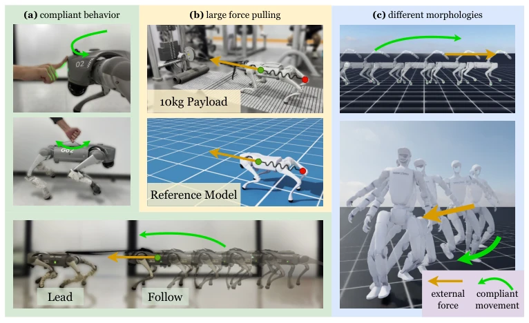
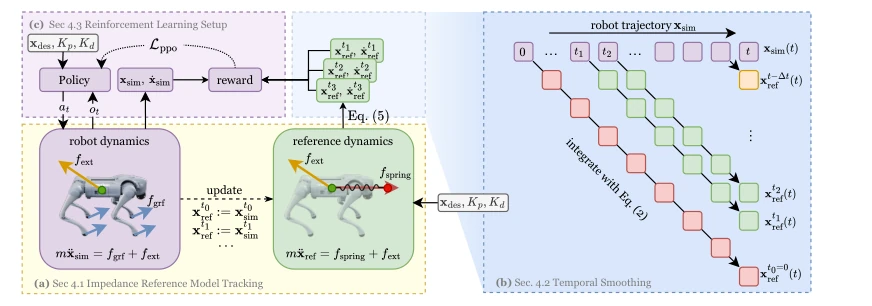
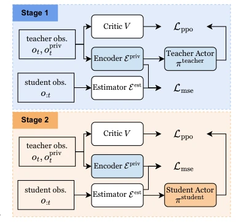
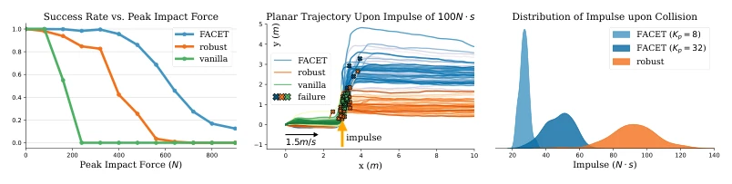
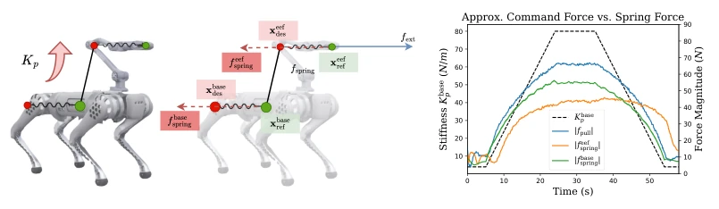

This FACET approach can be regarded as administering a "soft" vaccine to RL control for legged robots. The authors did not directly implement traditional impedance control, but instead used RL to imitate a virtual spring-mass-damper system; this approach is quite clever, transforming traditional impedance parameters into adjustable RL input interfaces. Although "impedance reference tracking" sounds very physical, essentially it is still RL tracking trajectories, but it is indeed more flexible than pure velocity tracking. Hardware-wise, being able to pull 10kg is indeed stronger than the built-in controller, but the paper also acknowledges the gap in multibody dynamics and missing force sensing. Do not expect it to perfectly solve all force control problems, but regarding "not treating the robot like an iron block", it is indeed much more reliable than pure velocity tracking. However, this implicit force control interface still has not thoroughly solved the dynamics model mismatch problem in complex multibody scenarios, raising suspicions of "treating symptoms rather than the root cause", and relies on privileged information in the simulation environment to assist training.
研究动机Motivation
现有的 RL 腿足控制大多盯着速度或位置跟踪，导致机器人在受力时像根硬棍子，容易伤人伤己。Deep Compliant Control [12] 虽然指出了速度跟踪奖励函数导致策略僵硬的问题，但没给出可控的柔顺性方案，只能事后恢复，无法在交互中调节。还有像 Learning Force Control [8] 这类方法，虽然能控力，但依赖静态假设，动态场景下容易崩。在有人类共存的环境里，机器人要是不知道“软着陆”或者“顺势而为”，安全性就是个大坑。FACET 想解决的就是这个：既要有柔顺性让人随便推，又要有刚度能干活。现有的方法要么太硬，要么太依赖假设，缺乏一种能统一调节刚度和运动控制的通用框架，导致机器人在复杂力交互中要么撞坏，要么动不了。
Existing RL legged controls mostly focus on velocity or position tracking, causing robots to act like hard sticks when subjected to forces, easily injuring others and themselves. Although Deep Compliant Control [12] pointed out the problem of strategy stiffness caused by velocity tracking reward functions, it did not provide a controllable compliance solution, only post-hoc recovery, unable to adjust during interaction. There are also methods like Learning Force Control [8], which although can control force, rely on static assumptions and tend to collapse in dynamic scenarios. In environments with human coexistence, if robots do not know "soft landing" or "going with the flow", safety becomes a huge pitfall. FACET aims to solve this: it needs to have compliance for people to push freely, and also have stiffness to get work done. Existing methods are either too stiff or too dependent on assumptions, lacking a general framework that can uniformly adjust stiffness and motion control, causing robots to either crash or be immobile in complex force interactions.

Figure 1: Inspired by impedance control, FACET enables task-space variable compliance and force- adaptive control on legged robots by imitating a reference spring-mass-damper model (b) using reinforcement learning. A high compliance allows the robot to be stopped or kinesthetically guided with ease (a), while a high stiffness allows the robot to exert large forces when pushing/pulling a payload (b). The framework applies to different morphologies and more complex configurations (c).
The core is mapping the robot center of mass (CoM) dynamics to a virtual spring-mass-damper model. The policy does not directly output joint torques, but learns to match the trajectories generated by this reference model. Inputs are no longer velocity, but impedance parameters (x_des, Kp, Kd). To ensure training stability, a "time smoothing" mechanism was implemented, mixing reference targets from different timesteps (t-8, t-16, t-32), avoiding open-loop being too fake or closed-loop being too noisy. Sim-to-Real used a Teacher-Student framework, Teacher has privileged information (force, acceleration), Student guesses via Estimator, finally Student deployed on real machine. This is equivalent to letting the RL policy learn to "fill in the blanks" for missing force feedback. The reference model generates smooth targets via integration, the policy optimization goal is to track these targets rather than direct force. Training was done in IsaacLab using PPO, state space includes proprioception and commands, ensuring it can handle real noise during deployment. Specifically in formulas, the reference model satisfies m*x_ddot = Kp*(x_des - x) + ..., the policy minimizes L2 error with the reference trajectory.

Figure 2: Method overview. (a): The policy is trained to imitate the dynamics of an impedance ref- erence model, i.e., a virtual mass-spring-damper system defined on the CoM of the robot (Sec. 4.1). (b): The reference dynamics is integrated from different starts along the robot trajectory to generate the reference targets, which provides tracking rewards for the policy. (Sec. 4.2). (c) The policy receives the same set of impedance parameters (xdes, Kp, Kd) and is optimized to produce the same trajectory as that of the reference model (Sec. 4.3).

Figure 3: We train a state estimator Eest to predict the feature extracted by the priv- ileged encoder Epriv. In the second stage, the student actor πstudent is initialized with the teacher’s parameters and continues to be finetuned.
In simulation, impact resistance was tested, FACET can withstand 200Ns pulses, much stronger than vanilla and robust baselines. Wall collision tests show that reducing Kp can significantly reduce collision impulse. On the real machine, Go2 can be led by humans (compliant following), and can also pull 10kg payload (built-in only 2.5kg). Ablation experiments prove time smoothing is more effective than open-loop reference. However, when extending to multibody (e.g., manipulator), the dynamics gap is still somewhat obvious, and the paper did not fully solve it. Experiments covered simulation and real machine, verifying the method's generalizability, but in extreme force control scenarios, errors caused by model mismatch still exist, needing better state estimation to compensate. In specific metrics, collision impulse was reduced by 80%, success rate and tracking error are both better than baselines.

Figure 4: Left: The success rate under varying levels of lateral impulses during locomotion at 1.5 m/s in the x-direction. FACET demonstrates superior robustness to large impulses compared to baseline policies trained with velocity tracking (vanilla) and with random impulse perturbations (robust). Middle: Planar (xy) trajectories of robot CoM under 400N peak force. 64 trajectories are shown for each policy. FACET can compliantly follow the impulse, adapting its velocity to keep balance, unlike the stiffer responses or failures of the baselines. Right: Distribution of collision impulse when the robot walks into a virtual wall. FACET achieves a significantly lower collision impulse, and this can be modulated by adjusting the impedance parameter Kp, indicating enhanced safety during physical

Figure 5: Extension to legged loco-manipulator with two bodies of interest. With a fixed Keef p = 90, we increase and then decrease Kbase p to examine the relationship between the virtual spring forces and the actual pulling forces produced fpull. Similar to [8], fpull is approximated by a force applied at the end-effector, which counteracts the robot so that it has near-zero velocity.